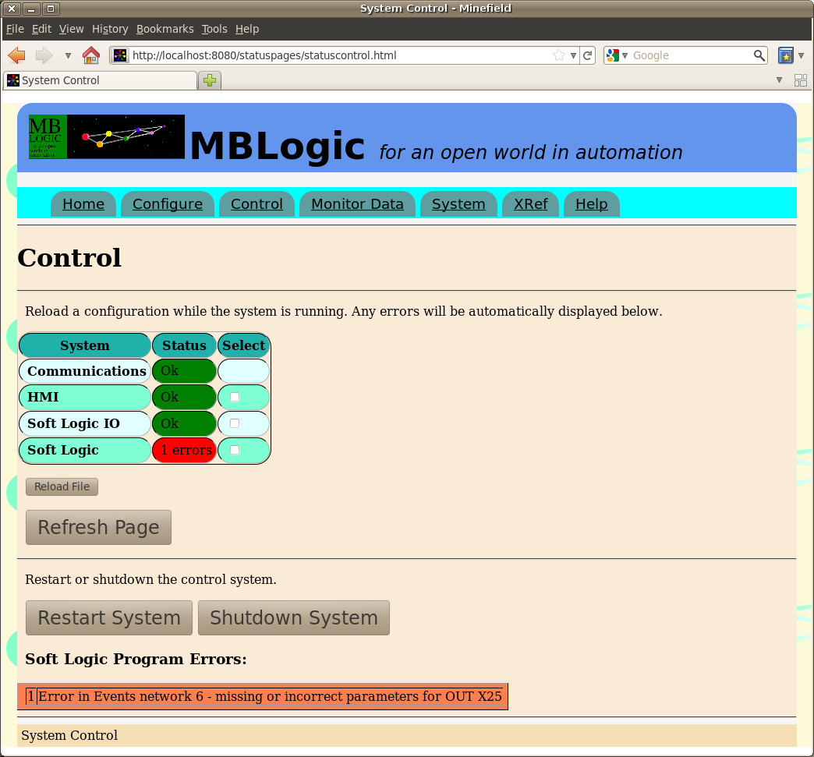
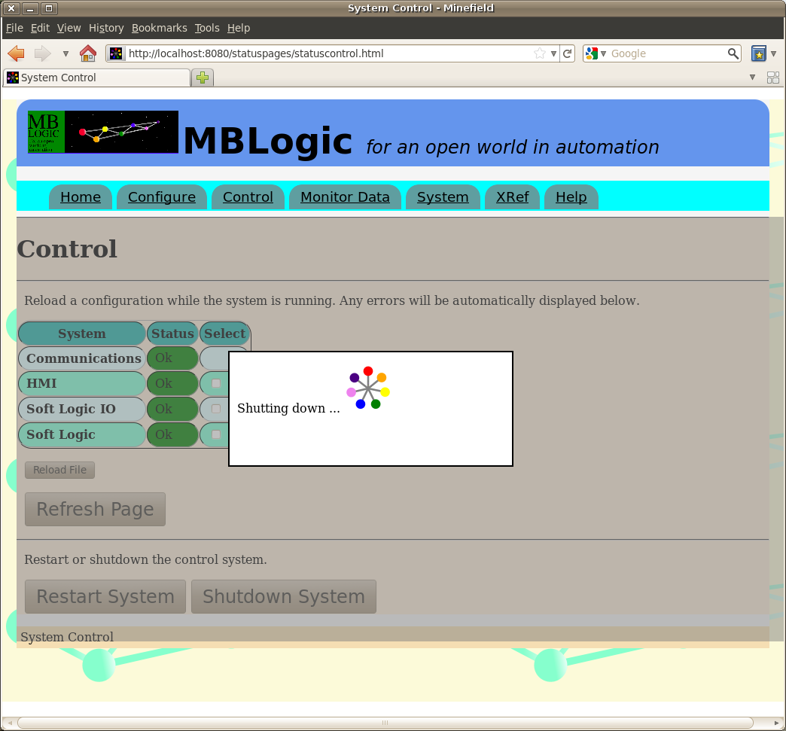
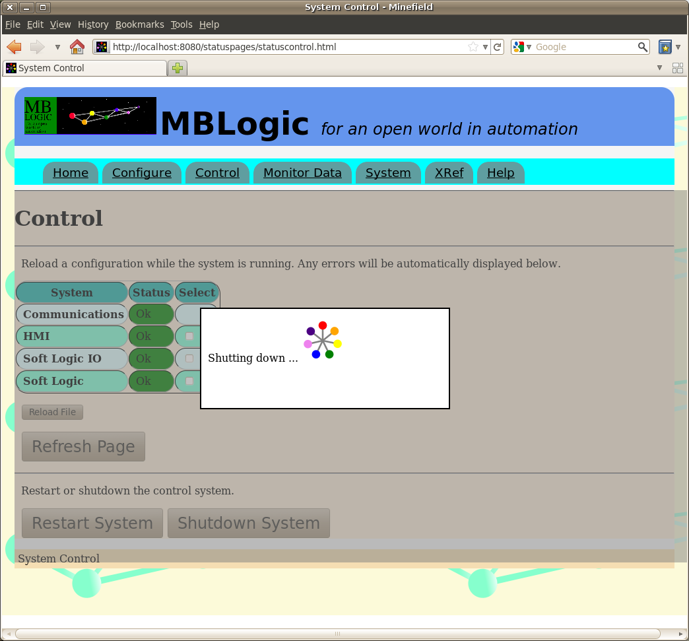
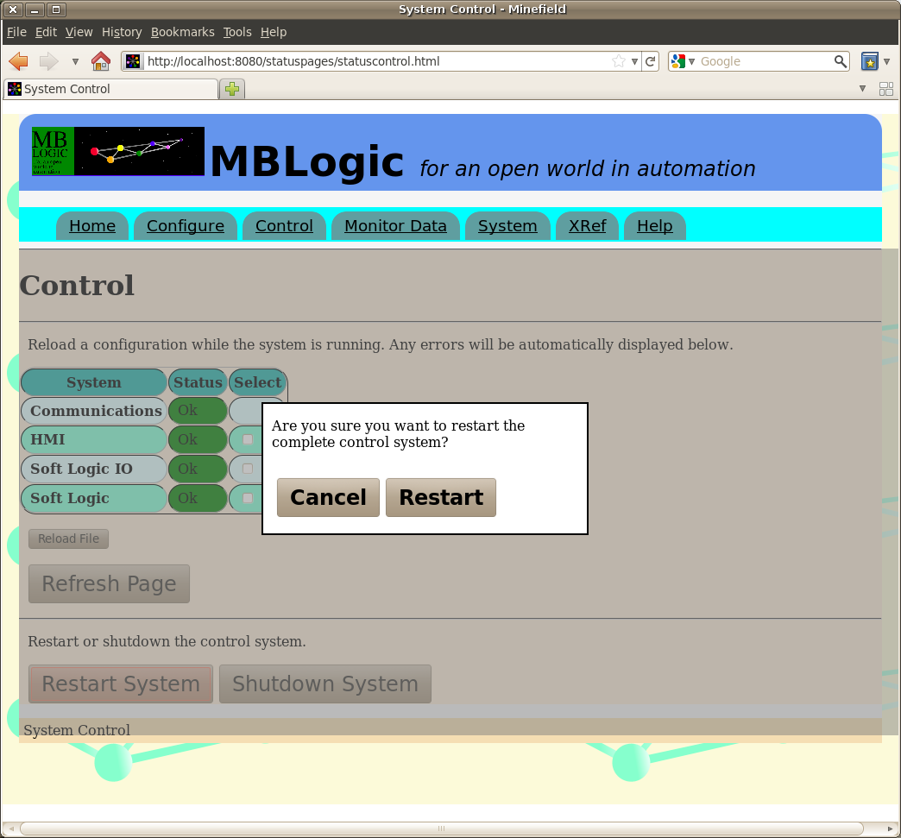

MBLogic
for an open world in automation
MBLogic
for an open world in automation
Help - Control
Overview
The "Control" page allows changes to the system while it is running.
Configuration Reload
Configurations may be reloaded from disk while the system is running. The following items may be reloaded while running:
- HMI
- Soft logic IO
- Soft logic program
To change the communications configuration, the system must be restarted.
The "Control" page differs from the "Configure" page in that it does not immediately affect the running copy of a configuration. When you reload a configuration (or soft logic program) the system checks it for errors. If any errors were encountered, the old copy continues running (and that is the copy which is shown in the "Configure" page). If no errors were found, the new copy becomes the running copy.
To reload a configuration, select the desired configuration(s) and then press the "Reload File" button. If any errors are found, they will be displayed below. If a very large number of errors are present, only the first few will be shown.
Reloading the HMI configuration will also reload the RSS monitor template as well as updating the ERP tag filters.
To update the page, press the "Refresh Page" button.

System Shutdown
The running system may be shut down. To shut down the system, click the "Shutdown System" button. A confirmation dialog will then appear. To cancel the shutdown, press the "Cancel" button. To confirm the shutdown, press the "Shut Down" button. No change will take place until one of these buttons is pressed. The other controls will be disabled.
If the shut down request is confirmed, a message will appear indicating the shutdown message has been sent to the system. The message will automatically clear after a time delay.
 

After the system has shut down, the web interface can no longer function (including loading web pages) as there is no server running for it to communicate to.
System Restart
The running system may be restarted. This performs a complete shut down followed by an immediate restart. This may take several seconds. To restart the system, click the "Restart System" button. A confirmation dialog will then appear. To cancel the restart, press the "Cancel" button. To confirm the restart, press the "Restart" button. No change will take place until one of these buttons is pressed. The other controls will be disabled.
If the restart request is confirmed, a message will appear indicating the restart message has been sent to the system. The message will automatically clear after a time delay.
